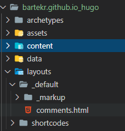

When I switched to Hugo, I knew my new blog would not have the comments enabled. I planned it “for later”, as I didn’t want to use Disqus (available by default in Hugo).
When I chose the hugo-future-imperfect-slim theme, I saw I could integrate Staticman, which creates the comments as the Pull Request in GitHub. Brilliant idea, but it involves some additional setup (either authorising Staticman GitHub account or hosting an own API instance). That’s why I skipped it when I migrated to Hugo. I decided to go back to the comments once I am more prepared for it.
A month later
I started reading more about Staticman integration, nested comments, using an Azure App Service or converting to Azure Function (excellent idea) and so on. But - after some internal tests, I was not amazed. Even more - I didn’t like it. Yes, it was doing what it was supposed to do, but I wanted a Wow effect. Something easy to set up, looking nice and something that makes me feel comfortable - “yes, this one fits perfectly”. So I started looking for the alternatives and this time I found something - use GitHub Issues system as the comments.
The pros - I want something out-of-the-box, what works, what would be easy to use by the technical people and give me no headaches. The cons - tight GitHub integration, to comment, users must use a GitHub account.
I found two implementations:
The first is something I decided to try. The second is something to have in mind for the future.
The setup
The documentation is clear:
- Install the app in the repository used for the comments (must be public)
- Decide what the issue name will look like (I chose the full post URL)
- Optionally set the (already existing) label for the issue (I use
blog-comment) - Optionally select a theme
All those steps fill the template to paste in the comments page. In my case - I have overwritten the comments.html used in the theme.

<script src="https://utteranc.es/client.js"
repo="[ENTER REPO HERE]"
issue-term="pathname"
theme="github-light"
crossorigin="anonymous"
async>
</script>
My setup:
<script src="https://utteranc.es/client.js"
repo="BartekR/bartekr.github.io"
issue-term="url"
label="blog-comment"
theme="github-light"
crossorigin="anonymous"
async>
</script>
For now - it’s to check whether it’s useful, maintainable and so on. I still wonder if I should port the comments from the previous WordPress blog (I think I should) and how to do it. I’ll wait to see how the situation develops.